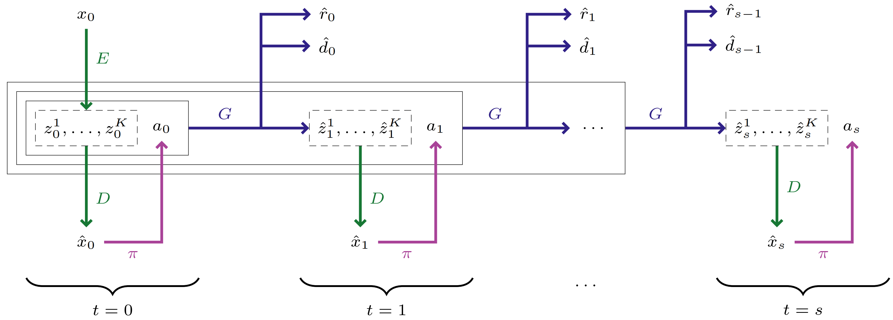

The world model is composed of a discrete autoencoder (E,D) to learn representation of observation and a GPT-like autoregressive Transformer G to capture environment dynamics
Component
Type
Definition
Distribution Family
Observation Encoder
Representation
E:Rh×w×3↦{1,2,⋯,N}K
Deterministic
Observation Decoder
Representation
D:{1,2,⋯,N}K↦Rh×w×3
Deterministic
Transition Predictor
Dynamics
zt+1∼pG(zt+1∣z≤t,a≤t)
zt+1k∼pG(zt+1k∣z≤t,a≤t,zt+1<k)
Categorical
Reward Predictor
Dynamics
rt∼pG(rt∣z≤t,a≤t)
Categorical / Deterministic
Termination Predictor
Dynamics
dt∼pG(γt∣z≤t,a≤t)
Bernoulli

Representation
The representation state zt consists of K tokens from a vocabulary of size N. The encoder E first produces a group of vector ze(xt)∈RK×d, then obtains the output tokens through a codebook E={ei∈Rd}i=1N
where zq(x) is calculated via zqk(x)=zek(x)+sg(ei−zek(x)) in practice to introduce straight-through gradients. The overall objective for (E,D,E) includes the aforementioned ELBO and several additional items
Loss
Definition
Target
Reconstruction Loss
Lrec=logp(x∣zq(x))⇒∥x−D(z)∥1
encoder + decoder
Codebook Loss
Lcode=∑k=1K∥∥∥∥sg(zek(x))−E(zk)∥∥∥∥22
codebook
Commitment Loss
Lcom=∑k=1K∥∥∥∥zek(x)−sg(E(zk))∥∥∥∥22
encoder
Perceptual Loss
Lperceptual(x,D(z))
encoder + decoder
Dynamics
The autoregressive Transformer G is trained in a self-supervised manner on segments sampled from past experience to minimize the difference between prediction and ground truth. The overall objective includes
Loss
Target
Cross Entropy Loss
Transition Predictor
Cross Entropy Loss / MSE Loss
Reward Predictor
Cross Entropy Loss
Termination Predictor
Behavior Learning
Following Dreamer, the critic network v(xt) is optimized through λ return, which is recursively defined as